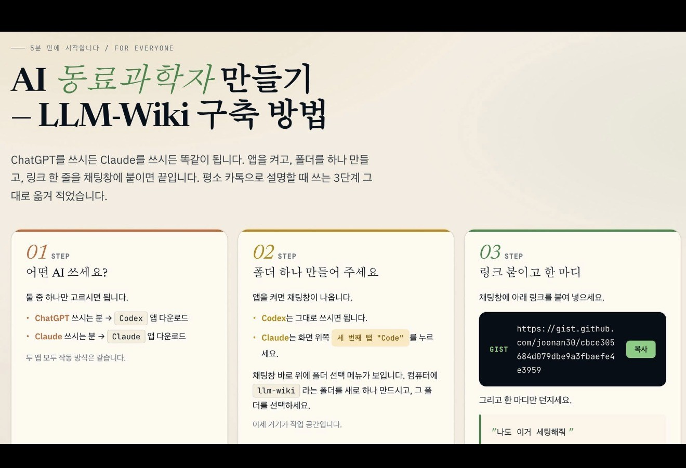
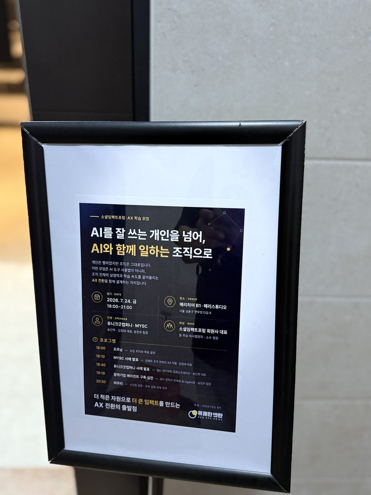
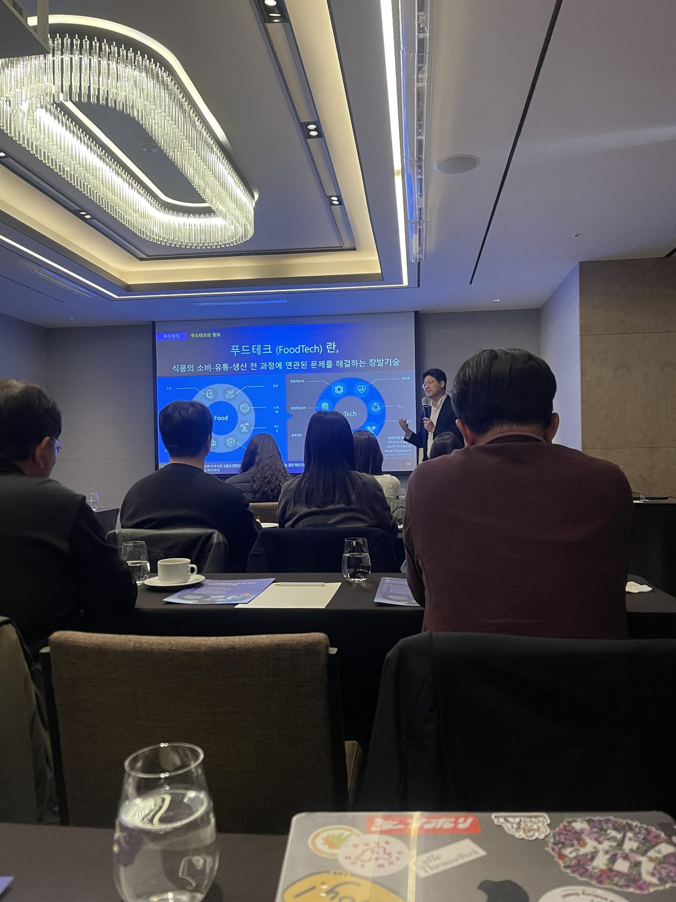
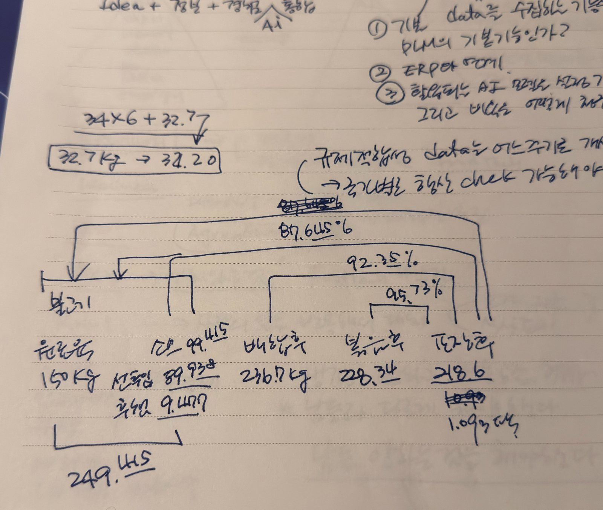
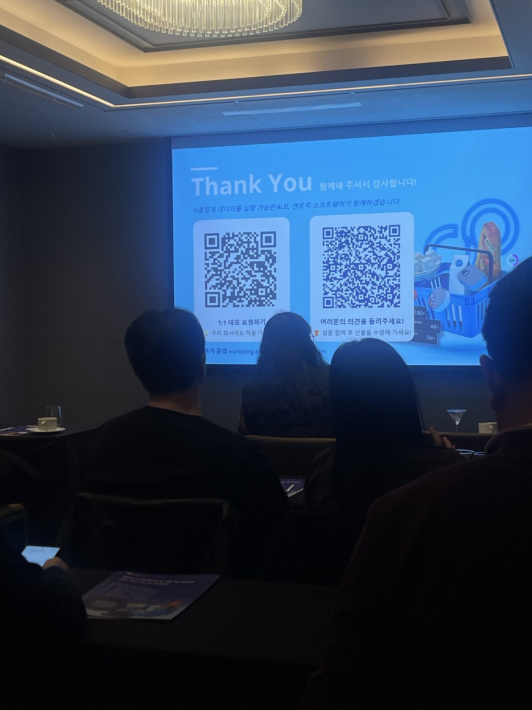

The apps I built, and why each one had to exist.
I am a butcher, not a developer. In the autumn of 2025 I took an afternoon class on Claude Cowork, and within a week I had built the first tool I actually needed. Since then: a voice-note app for the thoughts that arrive when both hands are full, the field app and ERP a meat plant runs on, and two small things for everyday life. This page is the record — what each one does, what it was for, and what I am still learning.
Written in Korean, first, in the order the work happens
One class, in the autumn of 2025
Goose Kim taught an afternoon class on Claude Cowork: someone sitting at a screen, describing a working tool in plain language and watching it appear. That was the whole of my introduction. I had already spent ten years of my earlier career inside systems — procurement first, then a company-wide BPR project that took every department's process apart and put it back on a computer — so I knew what a process has to contain. What I never had was a way to make the machine myself.
The vocabulary is new; the method is not. Writing an instruction for a model is the same discipline as writing a process sheet for a kitchen that has to run without me standing in it: the input, the rule, the exception that spoils the batch, and what to do when the temperature comes back wrong. I write it in Korean, in the order the work actually happens, and then I test it against the day I have just had.
Igeohaja — “let's do this”
Notes were everywhere: a memo app, a paper notebook, a photograph of a whiteboard taken because there was nothing else to write on. And the moment a thought actually arrived — both hands full, a queue in front of me, walking between the plant and the car — was the one moment when opening a phone and typing was impossible. So the first app does one thing. One button, speak, done: what you say is kept as a to-do or an idea, with the date and the time already on it, and sorted later when there is a free hand.
- One button: press, speak, and the note is filed as a to-do or an idea
- Built for the moment when typing is impossible
- My own problem, no launch and no users to please
The systems a plant runs on
These came second, and for a blunt reason: the paper was losing. Records written at the end of a shift from memory, yields worked out by hand, stock counted twice because two sheets disagreed. Each of the three started as one sheet that had to be replaced. The ERP and the field app alone are 457 commits, written one evening at a time.
Field app — process & HACCP records
What a worker fills in at the line: the process step, the temperature, the cleaning record, the hygiene check — entered on a phone or a tablet and stamped with the time it was entered, then rolled up into a dashboard the plant manager can read in a minute.
- Process and hygiene checklists at the line
- Temperature and cleaning records, time-stamped
- One dashboard for the day
Manufacturing ERP — meat, yield, stock
The numbers that used to live in three spreadsheets, in one place: what came in as raw material, what each primal yielded, what was produced, what is left in the cold store — and what a batch actually cost, not what the month averaged.
- Raw material in, yield out
- Production and inventory in one ledger
- Cost per batch, not per month
AXER — management & accounting
The layer above the floor: accounting, operations and management reporting in a single application, so the numbers the plant produces become the numbers a manager decides with. It was built alongside the field tools, which is why it knows what a shift actually looks like.
- Accounting and operations in one place
- Management reporting
- Built alongside the field tools
Three rooms I sat in during 2026
None of them was about tools. Each was about what changes once the tools are already there — in a person, and then in an organisation.
Building an LLM wiki
“AI 업무과학자 만들기 — LLM Wiki 구축 방법”: turning a company's own documents into something a model can answer from — projects, MCP servers, a code assistant wired into the flow. What I took home was a filing discipline, closer to how a kitchen keeps its recipe book than to anything I had read about prompts.
AX School, second cohort
A programme for small-business owners, run by 소상공인희망재단. The panel on the wall said the thing I had been circling for a year: not a person who uses AI well, but an organisation that works with AI. That is a different problem — it needs the process written down, the data collected at the line, and someone willing to change how a shift ends.
Food-industry data, turned into AI you can act on
A Centric Software seminar on what product data becomes once a model can read it. I spent the second half with a pen out: yield percentages in the margin, and a list of what the plant would have to start recording for any of it to hold. The page in the photograph below is that list.





Two things on the block now
One is a phone being tested in my own kitchen. The other is still a sketch.
Mangigom — the expiry keeper
Everything carries a date: a gift voucher, a coupon, a warranty, the milk. Mangigom takes one photograph, reads the date off it, and keeps a D-Day count for each thing, so that nothing is discovered on the day it has already gone. It is on a real phone now, being tested against my own kitchen drawer.
A grill master's app
The one I have wanted for eighteen years. Heat source, season, thickness, cut and the shape of the fire: a grill master carries all of that in his hands and almost none of it is written down properly. The app would take those variables and give back the time, the turn and the rest.
“The machine writes the code. What should exist, and what it must never do, is still mine.”On building with AI
Note on the images: every photograph and screenshot here is from my own camera or phone. Where a screen showed internal work documents, it was cropped or left out before publication.
Something you want built?
If you run a food business and wonder what your own data could do, or you have a process that exists only in someone's head — that is the work I do, with a knife in one hand and a terminal in the other.